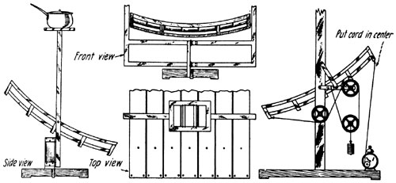

Side, Top and Front View of a Solar Stove Made of Tinplate and a Wooden Frame. For Camping Purposes This Kind of Heat is Very Efficient. The Alarm Clock and Weight System Maintain the Focal Point Directly Under the Pot.